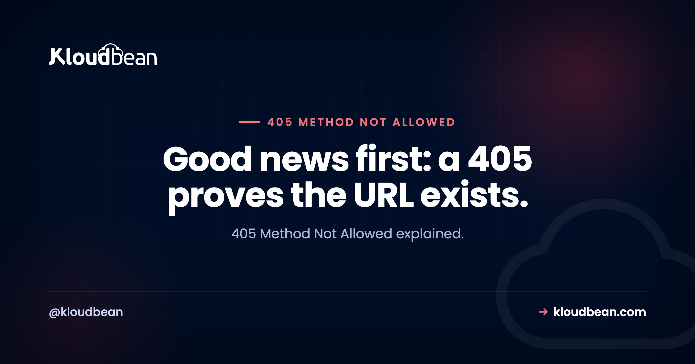

405 Method Not Allowed: Your CORS Error Might Actually Be This

405 Method Not Allowed means the path you requested is real and the verb you used on it is not permitted. That first half is genuinely useful information, because it rules out the thing people usually check first: the URL is not wrong, the route exists, your typo hunt can stop. What remains is a mismatch between the method you sent and the methods that route accepts, and the most time-consuming version of that mismatch never shows up as a 405 in your console at all. It shows up as a CORS error.
Ask the endpoint which methods it accepts with curl -sI -X OPTIONS and read the Allow header, then use one of those. If you are getting a CORS error in a browser rather than a visible 405, check whether your server handles the OPTIONS preflight, because an unhandled preflight returns 405 and the real request never fires. Two other common causes: a redirect converting your POST into a GET, and nginx returning 405 because you posted to a path that resolves to a static file.
405 or 404? The difference is worth noticing
| 404 Not Found | 405 Method Not Allowed | |
|---|---|---|
| Does the path exist? | No | Yes |
| What to check | The URL, routing, spelling | The verb, and what the route accepts |
| Should include | Nothing in particular | An Allow header listing methods |
| Useful side effect | Confirms your routing is correct |
That Allow header is required by the specification for a 405 and a great many APIs omit it, which is a shame because it turns the error into its own documentation. If you build APIs, sending it costs one line and saves your users a trip to your docs:
curl -sI -X DELETE https://api.example.com/v1/things/42 | grep -iE '^HTTP|^allow'If the response includes Allow: GET, POST, PATCH, you now know exactly what to use. If it does not, you are guessing, and the sensible order to guess in is the one your API's other endpoints follow.
The one that wastes the most time: an unhandled OPTIONS preflight
This deserves top billing because the symptom actively hides the cause, and it is extremely common in single-page applications talking to their own API.
Before a browser sends a cross-origin request that is not simple, meaning most requests carrying JSON or an Authorization header, it sends an OPTIONS request first to ask whether the real request is permitted. That is the CORS preflight. If your server does not handle OPTIONS on that route, it answers 405, the browser reads that as permission denied, and it never sends the actual request.
What you see in the console is a CORS error mentioning a missing Access-Control-Allow-Origin header. So you go and configure CORS headers, and nothing changes, because the problem was never the headers. The preflight itself was rejected before any CORS logic ran.
Test the preflight directly, which takes the browser out of the picture:
curl -sI -X OPTIONS https://api.example.com/v1/things \
-H 'Origin: https://app.example.com' \
-H 'Access-Control-Request-Method: POST' \
-H 'Access-Control-Request-Headers: content-type,authorization' \
| grep -iE '^HTTP|^access-control|^allow'A 405 there is your answer. You want a 204 or 200 with the Access-Control-Allow-* headers present. The fix is to make sure OPTIONS is handled before your routing rejects it:
// Express: cors() handles preflight, but the route must not intercept OPTIONS first
app.use(cors({ origin: 'https://app.example.com', credentials: true }));
// If you handle it manually, answer OPTIONS on every route that needs it
app.options('/v1/*', cors());Ordering matters more than the configuration. CORS middleware registered after your router, or a catch-all route that answers before it, means the preflight is handled by something that has no idea what it is. Our CORS guide covers the header side properly; this article covers why the headers were never reached.
The takeaway worth carrying: when a CORS error will not go away no matter how you configure the headers, test the preflight with curl. If it returns 405, you have been debugging the wrong layer.
Cause two: a redirect turned your POST into a GET
Subtle, and it produces a 405 that looks impossible because the endpoint definitely accepts POST.
You POST to a URL. That URL redirects, perhaps from HTTP to HTTPS, or from a non-canonical host, or from a path without a trailing slash to one with it. Clients receiving a 301 or 302 have historically re-issued the follow-up request as a GET, dropping the body. The target route accepts POST and not GET. You get a 405, and nothing about your code looks wrong.
# Watch the method change across the chain
curl -sIL -X POST --max-redirs 5 https://example.com/api/things | grep -iE '^HTTP|^location|^allow'Two fixes and you want both. Point your client at the final URL so no redirect is needed, which also removes a round trip. And if you control the redirect and it must stay, use 307 or 308 rather than 301 or 302, since those preserve the method and body explicitly. That distinction is covered in 302 vs 301, and this is the exact failure it exists to prevent.
The trailing slash version of this catches people repeatedly. A framework that redirects /api/things to /api/things/ will convert a POST to a GET on the way, so the same request succeeds or fails depending on one character.
Cause three: nginx and static files
A specific one worth knowing because the cause is invisible from the application side.
nginx serves static files with GET and HEAD only. Send a POST to a path that resolves to a static file, and nginx answers 405 itself without your application ever seeing the request. This usually means a routing fall-through: a request that should have reached your app matched a static location block first, or a try_files directive resolved to a file rather than passing to the upstream.
# Did the request reach the app at all?
sudo tail -20 /var/log/nginx/access.log | grep ' 405 '
# Which location block is matching?
sudo grep -n "location\|try_files\|proxy_pass" /etc/nginx/sites-enabled/your-siteYou will find advice to add error_page 405 =200 $uri;, which suppresses the error and does not route the request anywhere useful. That is a workaround for a routing bug, not a fix. Correct the location matching or the try_files fallback so the request reaches your application, which is the arrangement described in our nginx reverse proxy guide.
Related: some configurations restrict methods deliberately with limit_except, which is a legitimate hardening measure that occasionally outlives the reason for it. Worth grepping for if the endpoint should obviously work.
Cause four: WordPress and blocked verbs
The WordPress REST API uses PUT, PATCH, and DELETE, and several things in the usual stack dislike those. Security plugins block them as a hardening measure, some hosting configurations reject them at the server, and the effect is an API that reads perfectly and cannot write.
The signature is clean: GET requests to /wp-json/ succeed, and anything that modifies data returns 405.
# Reading works
curl -s -o /dev/null -w '%{http_code}\n' https://example.com/wp-json/wp/v2/posts
# Writing does not
curl -s -o /dev/null -w '%{http_code}\n' -X DELETE https://example.com/wp-json/wp/v2/posts/1WordPress also supports overriding the method through a header for clients that cannot send those verbs, which is a useful diagnostic as well as a workaround:
curl -sI -X POST https://example.com/wp-json/wp/v2/posts/1 \
-H 'X-HTTP-Method-Override: DELETE'If the override succeeds where the real verb fails, something in the path is filtering methods rather than your permissions being wrong. Check security plugins first, then server configuration. More on the REST API in the WP REST API guide.
Cause five: you are simply using the wrong verb
Worth stating plainly since it is the honest explanation a fair share of the time, especially against an unfamiliar API. The conventions are not universal and reasonable people disagree, so read the documentation rather than assuming:
| Intent | Usual verb | Also seen |
|---|---|---|
| Create | POST to a collection | PUT to a known identifier |
| Replace entirely | PUT | POST on stricter APIs |
| Update some fields | PATCH | PUT, or POST |
| Delete | DELETE | POST to a delete endpoint |
| Trigger an action | POST | Varies widely |
PATCH is the one most likely to catch you out, because plenty of APIs never implemented it and expect a full PUT instead. If a partial update returns 405, sending the complete object with PUT is the first thing to try.
| Symptom | Cause | First step |
|---|---|---|
| CORS error that no header config fixes | OPTIONS preflight returning 405 | Test the preflight with curl |
| 405 on an endpoint that accepts POST | A redirect converted it to GET | curl -sIL -X POST |
| Works with a trailing slash, fails without | Redirect changing the method | Call the final URL directly |
| Request never appears in app logs | nginx answered, static file match | Check location and try_files |
| GET works, DELETE and PUT do not | Verbs blocked by plugin or server | Try a method override header |
| PATCH rejected, PUT accepted | API never implemented PATCH | Send the full object with PUT |
| Worked before an infrastructure change | limit_except or a new proxy rule | Grep the server config |
If you are building the API
Three small things that make a 405 useful rather than annoying. Send the Allow header, because it is required and it answers the reader's next question. Handle OPTIONS on every route that browsers will call cross-origin, before your router has a chance to reject it. And do not return 404 where 405 is correct just to hide your routing, since obscuring which paths exist offers very little security and costs your users real time.
The reverse mistake exists too: returning 405 for a resource that genuinely does not exist. That sends people looking at their verb when the path is wrong, which is the most frustrating kind of misdirection because the status code is actively lying.
Where hosting fits
Two of the five causes are server configuration rather than application code, which is the part worth being specific about. A request that resolves to a static file instead of reaching your application, and methods restricted at the server level, are both nginx behaviour.
On Kloudbean, nginx is configured to pass application requests to your application rather than left as an exercise in location-block ordering, which removes the most confusing version of this, where a 405 never appears in your application logs because your application never saw the request. Because you have SSH access, the log and config checks above are available directly. Managed WordPress applications are set up with the REST API working, which covers the verb-blocking case.
The honest boundary: nobody else can decide which verbs your routes accept or handle your preflight for you. What managed configuration removes is the class of 405 that comes from a routing rule you did not write.

Related reading
The header side of the preflight problem, fixing CORS errors. On redirects converting methods, 302 vs 301. Neighbouring status codes: 400 Bad Request, 422 Unprocessable Entity, 403 Forbidden, and 409 Conflict. For the proxy layer, the nginx reverse proxy guide. And on the WordPress API, the WP REST API guide.
Requests that reach your application.
Managed servers with nginx routing configured rather than left to location-block ordering, SSH access for real diagnostics, and managed WordPress with the REST API working, from $8/mo. Free migration assistance included. Start at kloudbean.com.
Managed nginx · SSH access · Managed WordPress · One dashboard · Flat from $8/mo
FAQ
What does 405 Method Not Allowed mean?
It means the URL you requested exists and the HTTP method you used is not permitted on it. That is genuinely useful, because it confirms your routing and spelling are correct, unlike a 404 where the path itself is wrong. The response should include an Allow header listing the methods that route does accept.
What is the difference between 404 and 405?
A 404 means the path does not exist, so you check the URL and your routing. A 405 means the path exists and the verb is wrong, so you check the method. A 405 is therefore a partial success: half of what you sent was right.
Can a 405 cause a CORS error?
Yes, and it is the version that wastes the most time. Browsers send an OPTIONS preflight before most cross-origin requests, and if your server does not handle OPTIONS it returns 405, so the browser blocks the real request and reports a missing Access-Control-Allow-Origin header. You then configure CORS headers with no effect, because the preflight was rejected before any CORS logic ran.
How do I test a CORS preflight?
Send the OPTIONS request yourself with curl, including Origin, Access-Control-Request-Method, and Access-Control-Request-Headers, then read the status and any Access-Control-* headers. A 405 means the preflight is unhandled. You want a 200 or 204 with the allow headers present.
Why does my POST return 405 when the endpoint accepts POST?
Most likely a redirect converted it to a GET. Clients receiving a 301 or 302 have historically re-issued the follow-up as a GET and dropped the body, so a route that accepts only POST then refuses it. Run curl -sIL -X POST to watch the chain, point your client at the final URL, and use 307 or 308 for any redirect that must preserve the method.
Why does nginx return 405 for a POST?
Because nginx serves static files with GET and HEAD only, so a POST to a path that resolves to a static file is rejected by nginx before your application sees it. That normally indicates a routing fall-through in your location blocks or try_files. Suppressing it with error_page 405 =200 $uri; hides a routing bug rather than fixing it.
Why do DELETE and PUT fail on the WordPress REST API?
Security plugins and some server configurations block those verbs as a hardening measure, so reads succeed while writes return 405. Test with an X-HTTP-Method-Override header: if the override works where the real verb fails, something in the path is filtering methods rather than your permissions being wrong.
Should my API return 404 or 405 for an unsupported method?
405, with an Allow header. Returning 404 to obscure which paths exist offers very little security and sends people hunting for a URL problem they do not have. The reverse mistake is worse: returning 405 for a resource that genuinely does not exist makes the status code actively misleading.